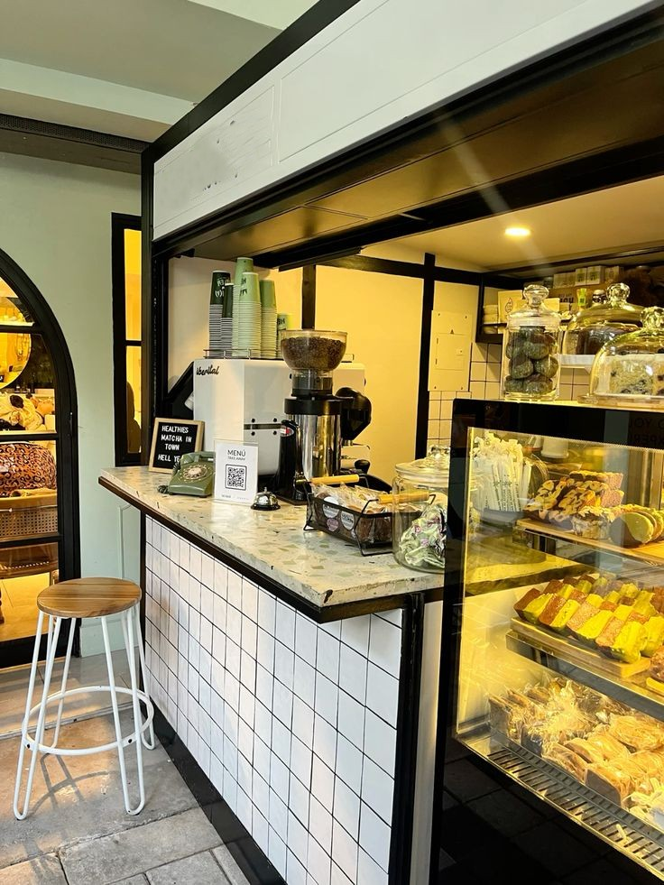
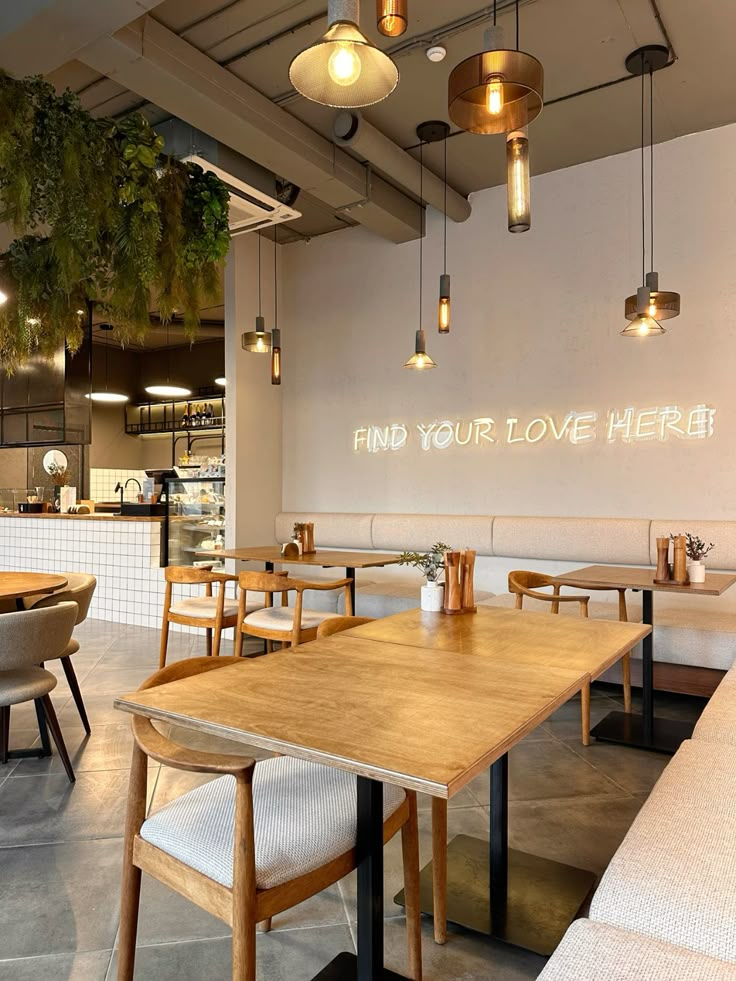
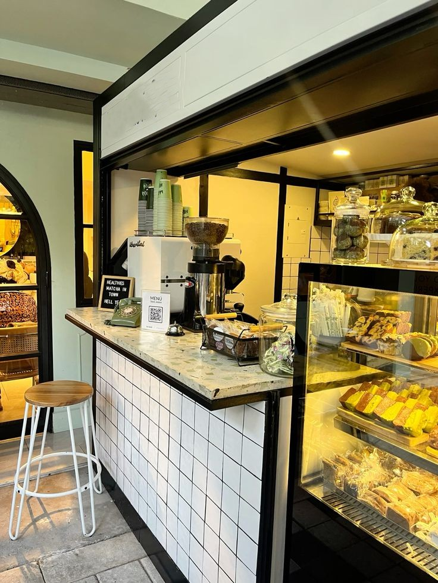
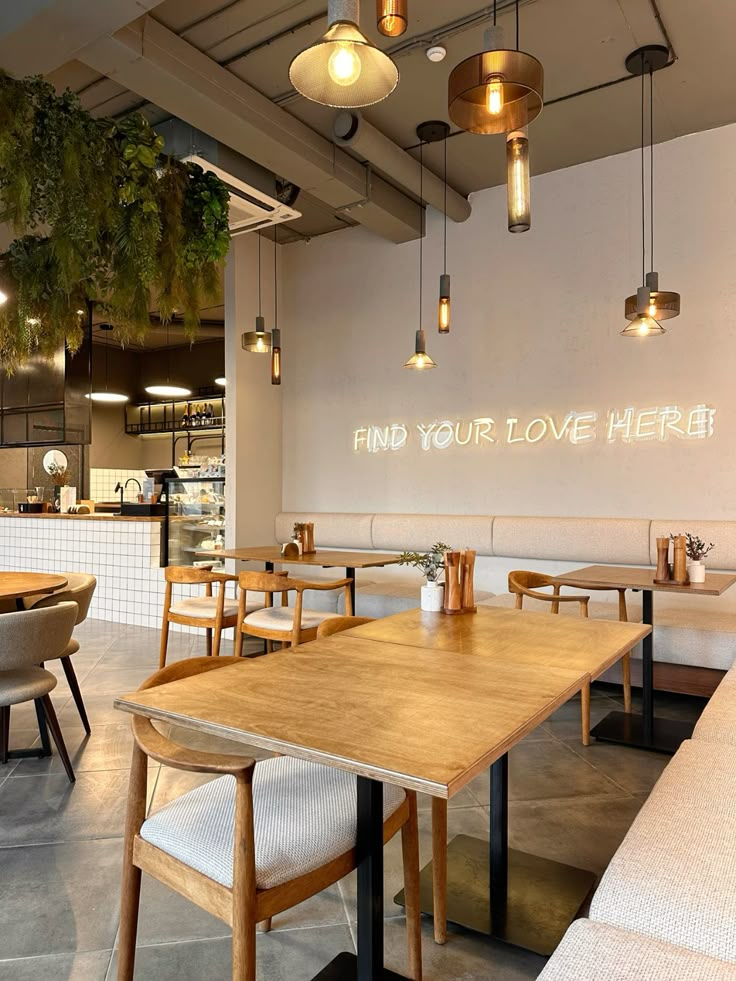

Piassa Coffee Ritual
Jebena buna poured tableside, served with popcorn or himbasha for an Addis‑style slow coffee moment.
A cozy corner near Adwa Museum serving Ethiopian coffee, tasty pastries and peaceful times with friends.
Silver Crown is a quiet escape just off Adwa Museum, where the sounds of Piassa mix with the clink of cups and the smell of coffee and freshly baked goods.
Beans are sourced from local growers then roasted in small batches and brewed the classic way in jebena or in espresso form. There are also many more cold and hot drink options. In the pastry case, you’ll find a mix of croissants, seasonal cakes and sweets.
Open daily in Piassa, a short walk from Adwa Museum. Go to the contact page for hours, directions and parking.
 



Jebena buna poured tableside, served with popcorn or himbasha for an Addis‑style slow coffee moment.
Buttery croissants, strawberry muffins, and daily bakes best enjoyed warm from the oven.
Limited drinks and desserts inspired by Ethiopian seasons and Piassa’s vibrant streets.


“After visiting Adwa Museum, we always stop by Silver Crown for matcha and strawberry muffins. It’s our family tradition now.”
— Dawit